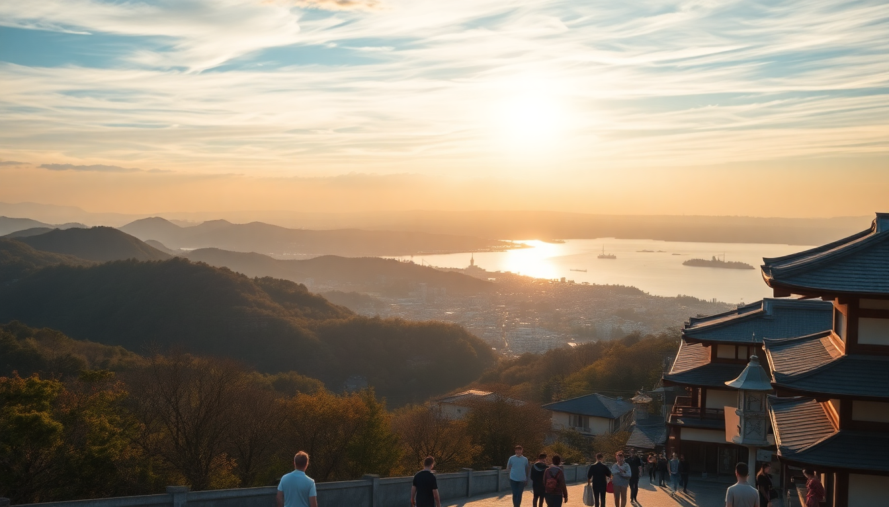

Best Day Trips from Osaka: Nara, Kobe and Beyond

I spent a week based in Osaka, and every morning I’d walk to Shin-Osaka or Namba station with a daypack and a vague plan. The city is a perfect launchpad — you can be feeding deer in Nara in 40 minutes, eating Kobe beef by noon, or staring up at Himeji Castle before lunch. Here’s what actually worked, what didn’t, and where I’d send a friend.
Why base yourself in Osaka for day trips?
Osaka’s rail network is absurdly convenient. Unlike Kyoto, where you often need a bus to reach the station, most major day-trip destinations are a direct train ride from Osaka Station or Namba. I stayed near Namba, and I could walk to the Kintetsu line for Nara or jump on the Hanshin line for Kobe without transferring. Hotels in Osaka also tend to be cheaper than Kyoto — I paid ¥8,000 a night at the Hotel Nikko Kansai Airport for a last-minute stay, but even mid-range spots like Cross Hotel Osaka run about ¥12,000–15,000. That leaves more budget for food and trains.
- Osaka Station connects to JR lines for Himeji, Kyoto, and Kobe
- Namba Station is the hub for Kintetsu (Nara) and Hanshin (Kobe)
- Shin-Osaka Station handles Shinkansen for farther trips like Hiroshima
- Consider a JR Kansai Area Pass (¥2,800 for one day) if you’re doing Himeji + Kobe in one go
Is Nara worth the hype — or is it just deer?
Nara is smaller than most people expect, and yes, the deer are the main event. But I found the real draw is Todai-ji Temple — that giant bronze Buddha inside the world’s largest wooden building is genuinely impressive, even if you’ve seen a dozen temples already. The deer in Nara Park are not shy. They bow when you bow to them (it’s trained, not magical), and they will eat your map if you hold it too low. I bought shika senbei crackers for ¥200 and got mobbed immediately. The trick is to feed them in small pieces and keep your pockets closed.
- Take the Kintetsu Nara Line from Namba (40 minutes, ¥570) — it drops you closer to the park than JR
- Visit Todai-ji first (opens 7:30 AM) to beat the crowds
- Walk through Nara-machi for quieter streets and good matcha soft serve at Nakatanidou
- Skip Kasuga Taisha unless you really love lanterns — it’s a long walk and feels repetitive after Todai-ji
- Lunch at Mimi’s Kitchen (a tiny curry shop near the station) — honest, cheap, and no English menu
What’s the best way to do Kobe in a day?
Kobe is often treated as a quick stop for the beef, but I’d argue it deserves a full afternoon. The city sits between mountains and the sea, so the views from Mount Rokko are excellent if the air is clear. I took the Rokko Cable Car up (¥600 one way), walked the observation deck, then came back down and headed straight for the beef. You don’t need a ¥20,000 teppanyaki dinner — lunch sets at Mouriya or Steakland Kobe are ¥3,000–5,000 and still melt-in-your-mouth good. I ate at Mouriya (reservations recommended) and the chef cooked a 130g sirloin in front of me with garlic chips and sake. Worth every yen.
- Take the JR Special Rapid Service from Osaka Station (20 minutes, ¥410)
- Ride the Rokko Cable Car early, then walk the Herb Garden trail down
- Eat lunch at Mouriya (reserve online a week ahead) or Steakland for walk-ins
- Walk the Nankinmachi (Chinatown) arcade for cheap steamed buns and xiaolongbao
- End at Meriken Park and watch the sun set behind the Port Tower
Should you squeeze Himeji into your trip?
Yes, but only if you’re okay with a half-day dedicated to one castle. Himeji Castle is the real deal — original, not rebuilt, and surrounded by a massive white facade that looks like a giant bird in flight. I arrived at 9 AM when it opened and had the main keep almost to myself for the first 30 minutes. By 10:30, the tour groups started flooding in. The interior is steep wooden stairs and narrow windows — not much furniture, but the defensive architecture is fascinating. The Kokoen Garden next door is a nice add-on (combined ticket ¥1,050) if you have an extra hour.
- Take the Shinkansen from Shin-Osaka (30 minutes, ¥1,450) or the JR Special Rapid (90 minutes, ¥1,520)
- Buy the combined castle + garden ticket at the gate, not online
- Allow 2–3 hours inside the castle grounds
- Lunch at Menme for hand-pulled ramen in a 100-year-old building near the station
- Skip the Himeji City Zoo — it’s small and sad
Is Kyoto doable as a day trip from Osaka?
Technically yes, but I wouldn’t recommend it unless you’re on a tight schedule. Kyoto deserves at least two days, but if you only have one, you can hit the highlights by starting early and using the bus pass. I took the JR Kyoto Line from Osaka Station (30 minutes, ¥580) and went straight to Fushimi Inari at 7:30 AM — the gates were empty and the light was golden. By 9 AM, the crowds arrived. I then bused to Kiyomizu-dera (packed by 10:30), and finished at Nishiki Market for lunch. It felt rushed, and I skipped Arashiyama entirely. If you do one day, commit to either eastern Kyoto (Fushimi, Kiyomizu, Gion) or western Kyoto (Arashiyama, bamboo, temples) — not both.
- JR Kyoto Line from Osaka Station is the fastest and cheapest
- Start at Fushimi Inari before 8 AM
- Buy a Kyoto City Bus One-Day Pass (¥700) at Kyoto Station
- Eat lunch at Nishiki Market — try the tamagoyaki at Kazariya and the miso-dengaku
- Skip Kinkaku-ji unless you love gold leaf — it’s far north and eats an hour in transit
What about day trips further out — Hiroshima or Miyajima?
I did Hiroshima as a day trip from Osaka and it was long but worth it. The Shinkansen from Shin-Osaka takes 90 minutes each way (¥5,000 one way, or free with the JR Pass). I visited the Peace Memorial Museum first — heavy but essential — then took the ferry to Miyajima Island for the floating torii gate. The gate was under renovation when I went (scaffolding everywhere), so check before you go. The island itself is charming: deer everywhere, good oysters grilled on sticks, and a short hike up Mount Misen for views of the Seto Inland Sea. I left Osaka at 7 AM and was back by 7 PM. Doable, but I was tired.
- Nozomi Shinkansen is fastest but not covered by the JR Pass — use Sakura or Hikari instead
- Combine Peace Park in the morning with Miyajima in the afternoon
- Eat grilled oysters at Kakiya on Miyajima (¥500 for two)
- Buy the ferry + ropeway combo ticket (¥2,000) to save time on Miyajima
FAQ
How do I get from Osaka to Nara without a JR Pass? Take the Kintetsu Nara Line from Namba Station. It’s ¥570 one way, takes 40 minutes, and drops you closer to Nara Park than JR Nara Station. No reservation needed — just tap your IC card.
What’s the best time of year for day trips from Osaka? March–May and October–November are ideal — mild weather and clear skies. Summer (July–August) is brutally humid, and the deer in Nara hide in the shade. Winter is cold but uncrowded; I went in January and had Todai-ji almost to myself.
Can I do Himeji and Kobe in the same day? Yes, easily. Take the JR Special Rapid to Himeji (90 minutes), spend 3 hours at the castle and garden, then hop back on the same line to Kobe (30 minutes). You’ll have time for beef lunch and a walk around Meriken Park before heading back to Osaka.
Conclusion
- Nara is the easiest and most rewarding half-day trip — go early, feed the deer, and see Todai-ji before the crowds
- Kobe is underrated — the mountain views and beef lunch combo make a perfect full day
- Himeji is a one-trick pony, but that trick is spectacular — go for the castle alone
- Kyoto as a day trip is tight — pick one area and commit, don’t try to see everything
- Hiroshima + Miyajima is a long day but unforgettable — start early and use the Shinkansen